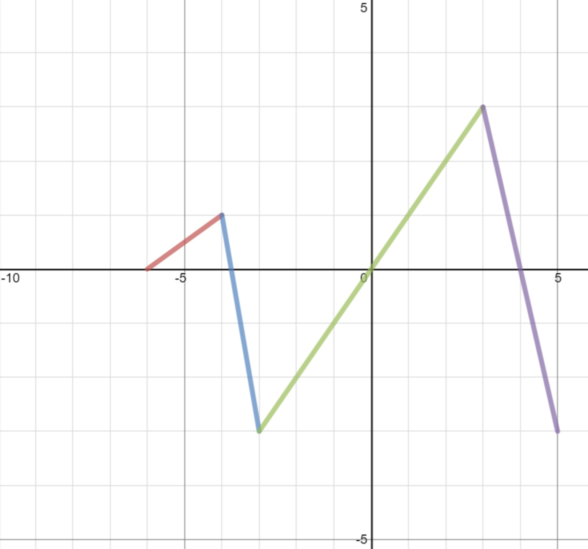

Skip to main content
Contents Dark Mode Prev Up Next \(
\newcommand{\lt}{<}
\newcommand{\gt}{>}
\newcommand{\amp}{&}
\definecolor{fillinmathshade}{gray}{0.9}
\newcommand{\fillinmath}[1]{\mathchoice{\colorbox{fillinmathshade}{$\displaystyle \phantom{\,#1\,}$}}{\colorbox{fillinmathshade}{$\textstyle \phantom{\,#1\,}$}}{\colorbox{fillinmathshade}{$\scriptstyle \phantom{\,#1\,}$}}{\colorbox{fillinmathshade}{$\scriptscriptstyle\phantom{\,#1\,}$}}}
\)
Subsection 4.2 Law of Sines and Law of Cosines Exercises
A triangle
\(DEF\) has measures
\(DE=8\) cm and
\(EF=13\) cm, and
\(\angle EDF = \frac{\pi}{4}\text{.}\) What is
\(\angle DFE\) (in radians)?
Suppose that in
\(\triangle GHK\text{,}\) \(GH=3\) cm,
\(HK=8\) cm, and
\(m \angle H = \frac{\pi}{6}\text{.}\) Find the length
\(GK\text{.}\)
A triangle
\(DEF\) has measures
\(DE=12\) cm and
\(DF=10\) cm, and
\(\angle EDF = \frac{\pi}{6}\text{.}\) What is the length
\(EF\text{?}\)
Solve each equation on the interval
\([0, 2\pi)\text{.}\) Check your answers in Desmos.
\(\displaystyle 2+\frac{1}{4}\cot\theta=\frac{7}{4}\)
\(\displaystyle -1=-2-\sin\theta\)
\(\displaystyle 3+4\cos\theta=4\)
\(\displaystyle 0=\tan(2\theta+\frac{3\pi}{2)}\)
\(\displaystyle -4+4\sec\theta-\sec^2\theta=0\)
\(\displaystyle 4\sin^2\theta+4=5\)
A circle has its center at
\(C= (3, -4)\text{,}\) and includes the point
\((0,0)\text{.}\) An object is moving counterclockwise around the circle. At time
\(t=0\text{,}\) the object is at the point
\((-2,-4)\text{,}\) and it takes
\(12\) seconds to complete a revolution.
Draw a diagram of the circle in the
\(xy\) -plane.
Write an equation for the circle.
Find a function of the form
\(f(t)=A\cos(B(t-h))+k\) that represents the
\(x\) -coordinate of the point as a function of time.
Find a function of the form
\(g(t)=A\sin(B(t-h))+k\) that represents the
\(y\) -coordinate of the point as a function of time.
Find the coordinates of the object at time
\(t=3\) seconds.
Find all the times
\(t\text{,}\) \(0 \leq t \leq 12\text{,}\) such that the
\(y\) -coordinate of the point is
\(-1\text{.}\)
Find all the times
\(t\text{,}\) \(0 \leq t \leq 12\text{,}\) such that the
\(x\) -coordinate of the point is
\(4\text{.}\)
At what time does the object first reach the origin
\((0,0)\text{?}\)
The roof of a house is sloped at an angle of
\(\frac{\pi}{6}\) up from the horizontal. The length of the roof from the peak to the edge (
\(\overline{DE}\) ) is 28 feet, and point
\(D\) is 10 feet above ground level. How high is the peak of the roof?
Figure 4.2.8.
A circle with center at
\(K=(5,7)\) has a radius of 10 units.
What is the equation of the circle?
Find two points
\(L\) and
\(M\) on the circle with center
\(K\) for which the length of the arc between them is
\(\frac{5}{2}\pi\text{.}\)
What is the area of a sector cut by an angle of
\(\frac{5}{6}\pi\) radians?
Refer to
\(h(x)\) as shown in
Figure 4.2.9 and
\(a(x)\) and
\(b(x)\) as shown in
Figure 4.2.10 .

Figure 4.2.9.
Figure 4.2.10.
Evaluate
\(h(3)\text{.}\)
What are the domain and range of
\(h(x)\text{?}\)
Does
\(h(x)\) have an inverse function,
\(h^{-1}\) on the domain
\(-5 \leq x \leq 3\text{?}\) Explain.
Find two
\(x\) values
\(p\) and
\(q\) such that the average rate of change of
\(h(x)\) on
\(p \leq x \leq q\) is less than 0.
Find two
\(x\) values
\(c\) and
\(d\) such that the average rate of change of
\(h(x)\) on
\(c \leq x \leq d\) is 0.
Find two
\(x\) values
\(m\) and
\(n\) such that the average rate of change of
\(h(x)\) on
\(m \leq x \leq n\) is greater than 0.
Let
\(f(x)=h(x-2)+4\text{.}\) Draw a graph of
\(f(x)\text{.}\) Describe the graph of
\(f\) as a transformation of
\(h\text{.}\)
Solve the equation
\(h(x)=1\text{.}\)
Solve the inequality
\(h(x)>1\text{.}\)
Let
\(p(x)=a(h(x))\text{.}\) Evaluate
\(p(-4)\text{.}\)
Let
\(q(x)=b(h(x))\text{.}\) Find
\(q(4)\text{.}\)
Define
\(m(x)=2b(x)-(h(x))^2\text{.}\) Find
\(m(-1)\text{.}\)
Shadan opens a banking account with $500. The account earns interest compounded annually. Let
\(t\) be the number of years the bank account has been open, and
\(A(t)\) the balance in the account. Suppose
\(A(t)=500 \cdot 1.015^t\text{.}\)
What is the annual interest rate on Shadan’s account?
What is the balance in Shadan’s account at
\(t=5\) years?
When will the bank account be worth $750?
Write a function equation for
\(A^{-1}\text{,}\) and give units for the input and output of
\(A^{-1}\text{.}\)
Suppose that Shadan’s twin sister, Shelly, opened a bank account at the same bank, with the same interest rate, but with twice as much money. Write a function equation for Shelly’s account balance,
\(B(t)\text{,}\) \(t\) years after the account was opened,
as a transformation of \(A(t)\text{.}\)
\(\displaystyle \frac{1}{y^2}+\frac{4}{y}=\frac{3}{y^2}\)
\(\displaystyle 1=\frac{n-2}{n-1}+\frac{4}{n^2-1}\)
![A house-shaped figure formed by line segments connecting labeled points. The base is a horizontal line with a point labeled A at the lower right corner and an unlabeled point at the lower left corner. Vertical line segments rise from each base endpoint to two upper side points. These side points connect by slanted segments to a top point labeled E, forming a peaked roof. A vertical line segment runs from point E straight down to the midpoint of the base. Another point on the right vertical side is labeled D. The figure resembles the outline of a house with a central support.](external/HouseGraphic.jpg)